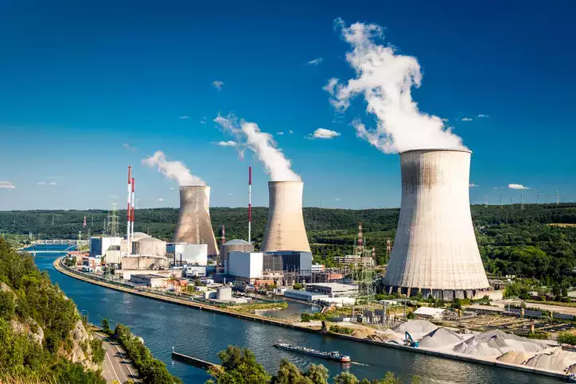
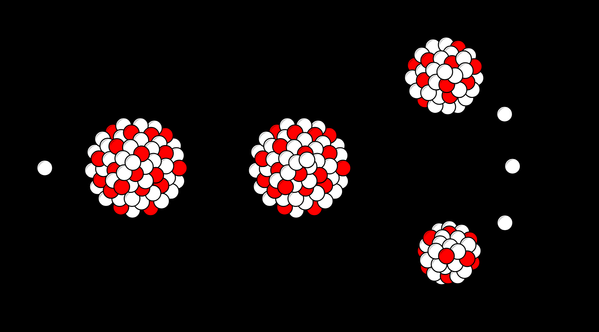
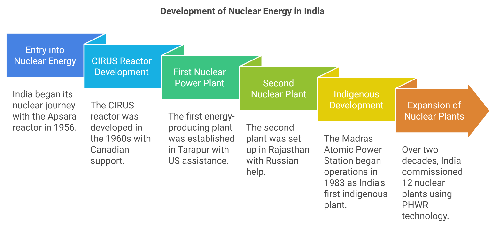
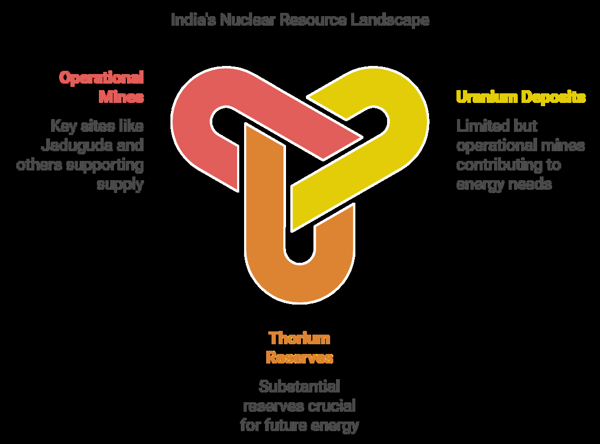
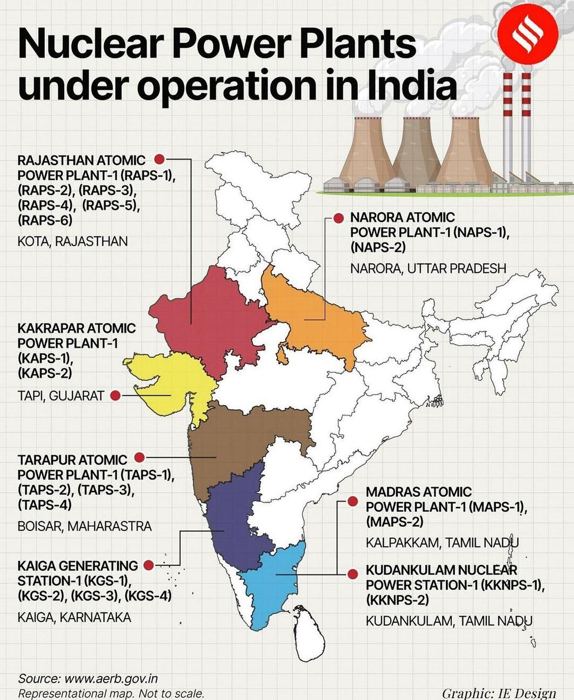
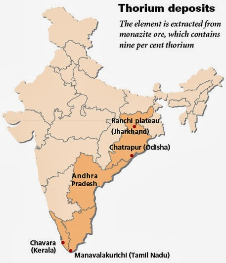
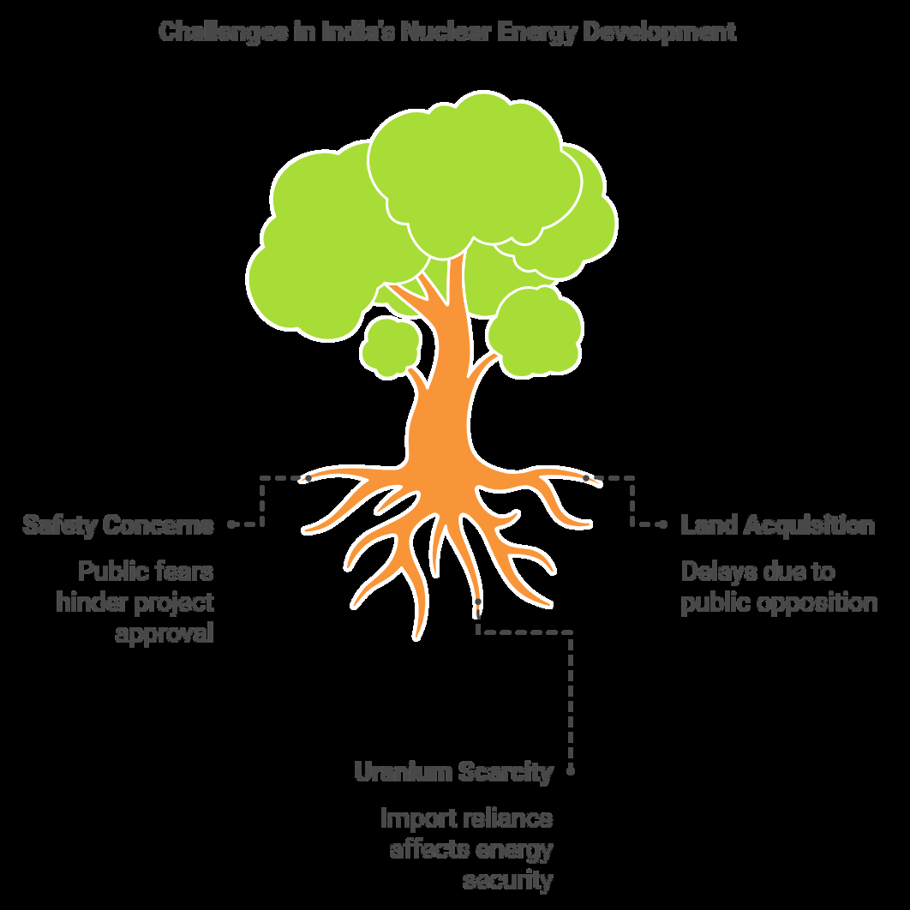

Energy Resources In India — Nuclear Power Plants
Nuclear energy plays a pivotal role in addressing the country's growing energy demands. India is one of the few countries that have successfully harnessed nuclear energy, producing electricity using indigenously developed nuclear reactors. This power source not only helps in generating electricity but also contributes significantly to the country's long-term energy security.

Definition of Nuclear Energy
Nuclear energy is produced through a nuclear fission process where atoms are
split to generate heat, which turns water into steam, driving a turbine and generating electricity. Nuclear reactors are the core machinery for this process.

India's Nuclear Program and Energy Development
Initiation of India's Nuclear Program (1950s) :
●
India’s nuclear program began in the 1950s with a primary focus on
ensuring energy security .
The Three-Stage Nuclear Power Programme , formulated by Dr. Homi
○
Bhabha , laid the foundation for the country’s nuclear energy journey.
The Atomic Energy Act (1962):
●
To advance the use of Uranium and Thorium as nuclear fuels, India
○
passed the Atomic Energy Act in 1962, enabling the development of
nuclear technology.
Nuclear Tests Conducted by India
●
First Peaceful Nuclear Explosion (PNE) :
○
i.
Year : 1974
ii.
Location : Pokhran Test Range, Rajasthan
iii. Codename : Smiling Buddha
iv. Significance : Marked India's entry into the global nuclear stage as
a nuclear power.
Pokhran-II (Operation Shakti) :
○
v.
Year : May 1998
vi. Location : Pokhran Test Range, Rajasthan
vii. Codename : Operation Shakti
viii. Tests Conducted : Five nuclear devices were detonated during this
operation.
ix. Significance : Demonstrated India’s ability to develop both fission
and thermonuclear (fusion) devices, highlighting India's diverse nuclear capabilities.
International Backlash and Nuclear Non-Proliferation Treaty (NPT):
●
Despite widespread international support for the peaceful use of nuclear
energy, India faced restrictions on developing nuclear strategic and
military capabilities.
India refused to sign the Nuclear Non-Proliferation Treaty (NPT) due to
its discriminatory nature, which led to limited access to global nuclear resources.
Nuclear Suppliers Group (NSG) Waiver (2008):
●
In 2008 , after years of challenges, the Nuclear Suppliers Group (NSG)
○
granted India a waiver , allowing the country to engage in nuclear
commerce for civilian purposes .
About Nuclear Energy in India

India's Entry into Nuclear Energy (1956):
●
India entered the nuclear age in August 1956 with the installation of the
○
Apsara nuclear reactor , operating initially with USA-supplied fuel .
CIRUS Reactor Development (1960s):
●
In the 1960s , India built the CIRUS reactor with Canada’s support for
○
research
purposes ,
which contributed to innovations in
medical
diagnostics and industrial applications .
India’s First Nuclear Power Plants:
●
The first energy-producing nuclear power plant was established in
○
Tarapur , with USA’s assistance .
The second nuclear plant was set up in Rajasthan with the help of
○
Russia .
Indigenous Nuclear Development (1983):
●
India’s first indigenously developed nuclear power plant was the
○
Madras Atomic Power Station (MAPS) , which began operations in 1983 .
India’s Position in Global Nuclear Energy Production
India ranks third globally in terms of electricity production , with nuclear energy
being the fifth-largest source of electricity in the country. India's nuclear energy
contribution remains essential for its energy transition plans, contributing toward its net-zero economy goals.
Potential of Nuclear Energy in India
India is progressing towards increasing its nuclear energy production, aiming to
boost its atomic power contribution from 3.2% to 5% by 2031 . This will help India
meet its growing energy needs while transitioning to a cleaner, more sustainable energy future.
List of Operational Nuclear Power Plants in India
| Name of Nuclear Power Plant | Location | Capacity (MW) |
|---|---|---|
| Kakrapar Atomic Power Station – 1993 | Gujarat | 440 |
| Madras Atomic Power Station (Kalpakkam) – 1984 | Tamil Nadu | 440 |
| Narora Atomic Power Station – 1991 | Uttar Pradesh | 440 |
| Kaiga Nuclear Power Plant – 2000 | Karnataka | 880 |
| Rajasthan Atomic | Rajasthan | 1,180 |
| Power Station – 1973 | ||
|---|---|---|
| Tarapur Atomic Power Station – 1969 | Maharashtra | 1,400 |
| Kudankulam Nuclear Power Plant – 2013 | Tamil Nadu | 2,000 |
India’s Nuclear Power Capacity
India currently has over 22 nuclear reactors spread across 7 power plants that
generate a total of 6780 MW of electricity.
Plans for Expansion
To meet energy demands, India plans to further expand its nuclear power capacity
by constructing 12 new nuclear power reactors by 2024 , with the intention of
enhancing its energy portfolio while reducing dependency on fossil fuels.
Nuclear Energy Resources in India
India faces challenges in fulfilling its growing energy demands due to limited domestic uranium resources, but it holds substantial thorium reserves, which could be crucial for the country’s nuclear future.
Uranium Deposits
Uranium is the primary fuel used in most nuclear reactors, and although India possesses limited uranium deposits, it has several operational mines:
Jaduguda : The first uranium deposit discovered in India, located in the
Singhbhum Thrust Belt (Jharkhand).
Other Mines : Mines like Bhatin, Narwapahar, and Turamdih continue to operate,
contributing significantly to the uranium supply. Additional uranium occurrences are found in Andhra Pradesh, Meghalaya, Rajasthan, and Chhattisgarh.


Thorium Deposits
India is one of the leading nations with abundant thorium resources, particularly in the form of monazite sands located along the east and west coasts, with a concentration of thorium in Kerala sands. Thorium is a promising alternative fuel for nuclear reactors.
Main Producing States : Rajasthan, Tamil Nadu, Jharkhand, Bihar, and Kerala.
●
Kerala’s Monazite Sands : Contains significant thorium reserves.
●

Nuclear Power Plants in India
India operates several types of reactors, and the country is continuing to advance its nuclear power infrastructure. Nuclear power plants in India are largely composed of Pressurized Heavy Water Reactors (PHWRs) and Light Water Reactors (LWRs).
Existing Nuclear Reactors
India operates 4 Light Water Reactors (LWRs) and 19 Pressurized Heavy Water Reactors (PHWRs).
Kakrapar Nuclear Power Plant (Gujarat) : India’s first large-scale indigenous
700 MWe reactor, operating at full capacity.
Reactors under IAEA Safeguards : India’s fourteen nuclear reactors are under
IAEA safeguards for international oversight.
Nuclear Power Plant Development
India aims to construct 12 new nuclear reactors by 2024 as part of its strategy to meet future energy requirements.
India's Three-Stage Nuclear Power Program
Dr. Homi Bhabha, the father of the Indian nuclear program, in 1950s, formulated a
three-stage nuclear power program to ensure the country’s long-term energy independence.
Stage 1: Pressurized Heavy Water Reactors (PHWRs)
Fuel : Natural uranium.
●
Byproduct : Plutonium-239.
●
Goal : To utilize uranium efficiently while avoiding uranium enrichment, which
reduces waste and provides for refueling without reactor shutdown.
Stage 2: Fast Breeder Reactors (FBRs)
Fuel : Plutonium-239 is produced from the first stage.
●
Byproduct : More uranium-239 for subsequent use.
●
Advantages : FBRs are energy-efficient, as they recycle nuclear waste from the
first stage.
Cooling Agent : Liquid sodium (which can react explosively with water and air).
●
Safety Concerns : Although FBRs are effective, their containment structures are
not as robust as conventional reactors.
Stage 3: Thorium-Based Reactors (TBRs)
Fuel : Thorium, which will generate uranium-233 upon irradiation.
●
Goal : To move towards utilizing abundant thorium, making nuclear energy more
sustainable and greener.
Advantages : Thorium is safer and greener than uranium; it also produces fewer
harmful byproducts.
Key Institutions Driving Nuclear Energy in India
India’s nuclear energy sector is governed by several prominent organizations focused on research, safety, regulation, and the operation of nuclear plants, which play a crucial role in advancing the country’s energy goals.
Bhabha Atomic Research Centre (BARC)
Operates under the Department of Atomic Energy (DAE).
Primary Objective : Ensures the peaceful use of nuclear energy within India.
●
Main Role : Supervises all aspects of nuclear power production in India.
●
Atomic Energy Regulatory Board (AERB)
Established in 1983 under the Atomic Energy Commission.
Core
Function : Regulates nuclear safety and ensures that proper safety
guidelines are followed at nuclear facilities across India.
Nuclear Power Corporation of India (NPCIL)
The exclusive operator and owner of all nuclear power plants in India, except for the Prototype Fast Breeder Reactor (PFBR).
Responsibilities :
Responsible for designing, constructing, commissioning, and managing the operation of nuclear reactors.
Atomic Energy Commission (AEC)
Governs the Department of Atomic Energy (DAE), which is directly overseen by the Prime Minister of India.
Key Functions of AEC :
Promotes research in atomic science. Trains nuclear scientists within the country. Supports nuclear research in laboratories under DAE.
